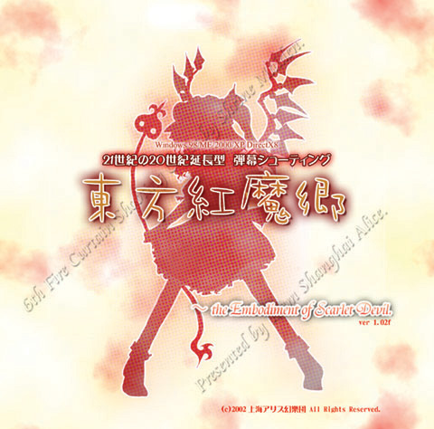
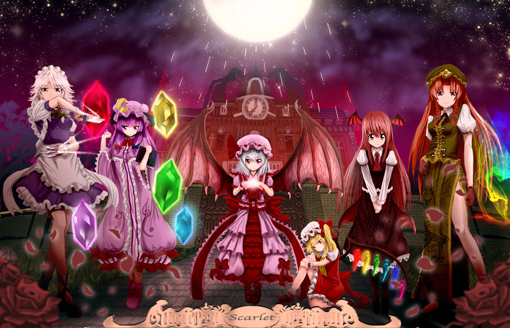
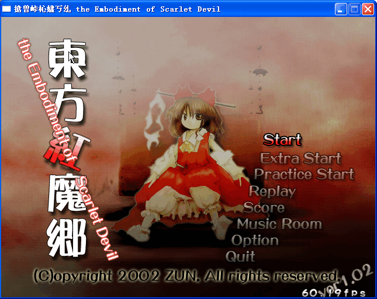
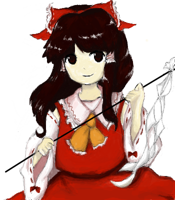
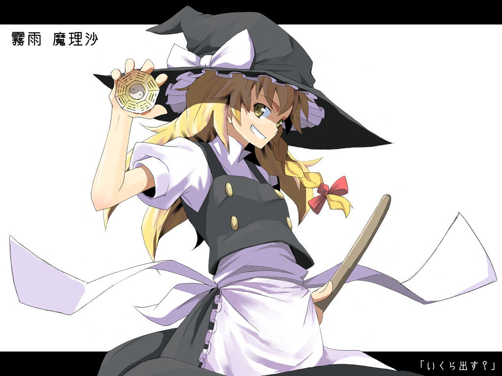

紅魔館館主蕾米莉亞覺得太陽很煩，外加無聊（喂），所以放出紅霧壟罩整個幻想鄉，令幻想鄉即使到了夏天依然很寒冷。普通人只能忍受這股紅霧30分鐘，很多人都留在家中以避開這股紅霧。這股霧持續了半個月，霧開始擴散到幻想鄉以外，恐怕外界會因此發現幻想鄉存在的靈夢和魔理沙，決定動身找尋引發異變的犯人。接著她們發現了居住在紅魔館的吸血鬼姊妹……

人物介紹
先介紹早期出場的主要人物～

ZUN原作繪
『博麗 靈夢』 種族：人類
貫穿全作的女主角，博麗神社的巫女，生來就具有巨大的靈力，但討厭修練，喜歡坐在神社門口邊悠閒地喝茶邊看著天空發呆。總是只靠第六感解決怪異事件，對一切平等看待，使得他人無法對她抱持敵意。
博麗神社由於常有妖怪出沒，雖然保證在神社不會被妖怪攻擊，但在前往途中還是會經過危險的獸道，故幾乎沒有參拜者，這就導致博麗神社都沒有香油錢。二創中靈夢被誇大為守財奴、見錢眼開的死愛錢個性……
能力：主要是空中飛行，其實是因為她不受任何力影響，包括重力
外號：腋巫女（因為她穿著露出腋下的巫女服，有一說是，靈夢窮到沒錢補衣服）、紅白、無節操、黑白後宮1
『陰陽球』：原名陰陽玉，是靈夢除了符外的主要攻擊手段之一。
『賽錢』：指香油錢，二創中，靈夢的最大怨念。但實際上官方設定中靈夢並沒有金錢概念。

『霧雨 魔理沙』 種族：人類
居住於森林的魔法使，喜歡搜集東西，努力追趕著不修行也很強的靈夢。性格直率愛惡作劇，和另一位魔法使愛麗絲雖然關係親密卻老是爭執不斷。攜帶的「迷你八卦壺」威力足以燒掉一座山。
蒐集東西的方式和強盜沒兩樣，理由是：「我只是暫時借來用而已，反正妖怪壽命那麼長， 等我死後你們再自己拿回去不就好了？」不丟東西派，所以在只進不出、也不整理的情況下，常常是珍品與垃圾混雜的狀況，房間髒亂程度堪稱全幻想鄉第一。由於身為人類無法創造魔法，所以常到處去“借”魔法書來研究，被圖書館的帕邱莉視為眼中釘。
能力：使用魔法
外號：普通的魔法使、黑白老鼠、小偷、最無德、魔炮少女
『迷你八卦壺』：又稱微型八卦爐，主要在放出魔炮攻擊時使用。
『掃把』：魔理沙用來代步的飛行道具。其實她可以法獨力飛行的樣子，只是覺得不拿掃把就不像魔女了
『露米亞（Rumia）』 種族：妖怪(闇妖)
紅魔鄉第一關頭目。只有在夜晚才會出現的妖怪，喜歡吃人肉。與其說是露米亞操縱黑暗鉼鉿鉺銦，不如說露米亞的週遭永遠都是黑暗的。黑暗裡面就算是夏天也會很涼爽，和外面看不到裡面的東西一樣，裡面也看不到外面的東西。頭上綁著的頭巾，其實是一道符咒，露米亞本人無法拿下來。
能力：操縱黑暗的能力
外號：そーなのかー（「是—這樣嗎—？」由來是在遊戲中出現的對白）
# 周圍無論何時都是一片黑暗
# 她變出的黑暗, 是火把也無法照亮的魔法之暗, 她會趁黑暗而襲擊對方
# 新月時身邊的黑暗會解除
# 外表是年幼的少女, 金髮赤眼, 繫一條紅色緞帶
# 據聞緞帶是一張符咒，露米亞本人無法拿下來
# 看起來是幼女但還是會吃人的
# 根據目擊者的說法, 露米亞似乎在發出黑暗後自己也會看不見
# 總是擺出十字的手勢, 不清楚原因, 於是有人懷疑她沒有手肘關節(誤)
# Window版東方遊戲中最弱, 但二創中脫去絲帶有EX化能力的設定, 一般形象為手持黑色巨劍,有著黑色翅膀的長髮御姐,能操縱光與闇,甚至力量到達神級
『奇露諾（Cirno）』 種族：妖精
冰的妖精，住在紅魔館四周的湖。平常總是喜歡把青蛙冰起來玩(將青蛙冰起來再試著解凍，不過每三隻裡面會有一隻失敗)，曾經差點被沼澤的大蛤蟆吞下去。在東方花映塚中的使用者說明中，被神主當作範本，標記為⑨，並註有"９，笨蛋"（９. バカ）的解釋。能力可以讓小東西瞬間結冰，在妖精當中算是很強的。
外號：笨蛋、⑨、冰精
『あたい』：奇魯諾的自稱，「あたい最強！(本小姐最強)」是她的口頭禪。
『紅 美鈴』 種族：妖怪
紅魔館的門衛（門番），擅長中國功夫的高手，特徵為帽子上的五角星，其上書寫著「龍」。身材似乎是東方系列中最好的。由於初登場時沒有名字，只有「華人小娘」的稱呼，日本人索性叫她「中國」。後來ZUN給她取名為紅美鈴，但仍常被人忘記本名。二創中，總是沒什麼存在感，非常介意別人忘記她本名一事，由此而誕生了知名同人Flash：萬年中國飛翔。
雖然是妖怪卻對人很親切，不過若有任何人想侵入紅魔館都得過她這關。
話雖如此，卻因為實力不強而放進了一大堆侵入者…二創中衍生為她總是在工作中打瞌睡。此外常被女僕長十六夜咲夜欺負，動不動就被銀小刀刺頭。擁有適合旗袍的巨乳+修長美腿，身高為東方第2高（最高的是小町）。
能力：運「氣」
外號：中國、門番、404
『帕邱莉‧知識（Patchouli Knowledge）』 種族：魔女
大概有100歲的魔女，平常待在紅魔館圖書館的知識分子，特徵為帽子上的月形。有氣喘的毛病，喜好看書，過著「三餐靠咲夜供應→看書→睡覺→三餐」的日子，已經在紅魔館中看了百年的書，館內有些書還是她寫的。擅長操縱五行。忍耐魔理沙的盜竊行為已久，叫她「黑白鼠輩」。
外表有點無口的印象(就是悶久了)，是個大毒舌，穿著像是睡衣的長袍。有一名叫「小惡魔」的紅髮僕從在旁侍奉，二創中兩人常被設定為百合關係，也有人認為她們相處得不好。
能力：操縱火＋水＋木＋金＋土＋日＋月
外號：宅女1、黑白後宮2、毒舌、香草
『十六夜咲夜』 種族：人類
紅魔館女僕長，性格沉著冷靜，對吸血鬼大小姐忠心耿耿以致被稱作「惡魔的狗」，武器是銀小刀，不過最近因為材料難取得似乎打算換成別的。
在外界時候因能力的原因受到排擠，之後來到幻想鄉在紅魔館當女僕，主要工作是蒐集食材+打掃紅魔館+做飯+照顧大小姐，無薪水，不過咲夜完全不在乎這一點。十六夜咲夜這個名字是雷米莉雅給的，打從內心發誓對大小姐效忠，本身頭腦很好、本事不賴，幾乎是沒有弱點，除了舌頭怕燙以外。
能力：操縱時間
外號：女僕長、妹抖、狗狗、PAD長(因各版本胸圍有差異，有人懷疑她使用胸墊)
『和八意永琳的關係』：在『永夜抄』中，永琳見到她時嚇了一跳，雖然對白沒有說清楚，兩人應該存在某種關係。一般認為咲夜的時間停止能力是永琳的作品，因而二創中兩人衍生出百合關係……
『蕾米莉亞‧真紅（Remilia Scarlet）』 種族：吸血鬼
500歲的蘿莉吸血鬼，紅魔館女主人，特徵為黑色的翅膀，有著目中無人的自大性格。害怕流動的水、陽光（會變蒸氣）、洋蔥，但不怕十字架。本身吃的很少，吸血也吸不多，因此被她吸血的人類頂多貧血而不至死，所以每次想增加同伴都失敗，「鮮紅惡魔」之名的由來，就是因為鮮血大多都溢出來，將洋服染紅的關係。
自從紅魔鄉一戰輸了之後，常常沒事就跑去偷看對手靈夢，所以一般認為她對靈夢有好感。
一般有兩種二創形象，其一是任性狂傲卻冒失的性格，
其二和原作完全相反，是弱氣愛哭的小孩。也許是為了反襯其妹妹的兇暴…
能力：操控命運
外號：紅白後宮、大小姐
『芙蘭朵爾‧真紅（Flandre Scarlet）』 種族：吸血鬼
年齡495歲，蕾米莉亞的妹妹，特徵為彩色的翅膀，心智不太正常，被軟禁在紅魔館內部，擁有比姊姊更強大的精神力。通常吸血鬼在要填飽肚子的時候，會在維持不殺死人的程度下去襲擊人，但因為芙蘭朵爾的食物由別人提供，不知道襲擊人類的方法，也因此不懂得控制力量，會把對方轟得連一滴血都不剩。
二創中，她被塑造成情竇初開的少女，非常喜歡打敗自己的魔理沙。由於關在地下室長達495年，獲得幻想鄉最強「家裡蹲」稱號，和帕邱莉‧知識以及『永夜抄』的蓬萊山輝夜合稱幻想鄉三大宅女…角色主題曲曾被麥當勞叔叔拿去改編成藍藍路，所以又被稱為「藍藍路教主」。
看過這個「藍藍路」MAD的人很多，可是有多少人知道其曲目的出處呢w
這是麥當勞叔叔版：
這是鬼畜妹版：
能力：破壞一切
外號：二小姐、蘭蘭路教主、黑白後宮3、最終鬼畜妹、宅女2
光是第一篇人物介紹裡，就出現了3個魔理沙的後宮www我看最無節操的應該是她吧 orz
下一篇要寫東方妖妖夢。
讀完這篇後，應該就看得懂這個MAD了：
【東方同人】(MAD) 第2回東方M-1比賽『帕邱美鈴』動畫版
享受東方二創帶來的樂趣吧 XD
[ 推薦閱讀 ]
東方相關的文章目錄 - 2008